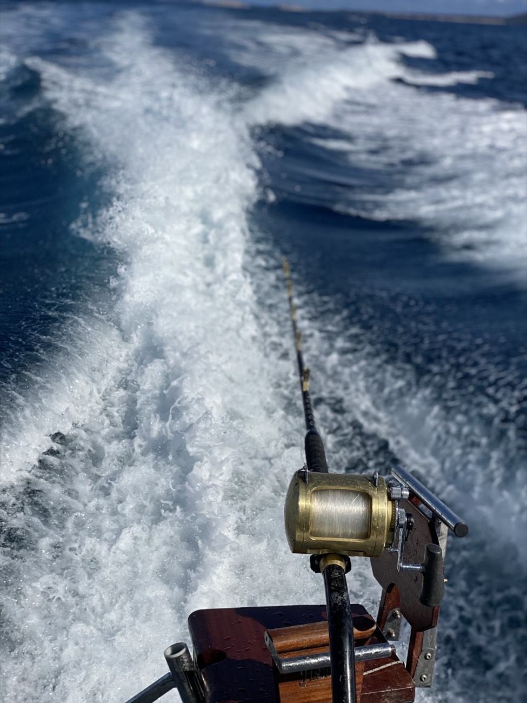

Trolling
Vučenje mamaca iza broda u vožnji, uz outriggere – klasika big game ribolova na tunu i marlina.
Dvije vrste ribolova, svaka kao zajednička tura ili cijeli brod za vaše društvo. Na pučini se lovi trollingom, jiggingom, poppingom i driftingom – ovisno o ribi, vremenu i moru.

Cijene prema ponudi kapetana na FishingBookeru (studeni 2026.). Potvrdite termin i cijenu telefonom.
Ribe koje lovimo: Plava tuna, plavi marlin, wahoo, gof, kirnja, škrpina, jastog i plava psina.
| Tura | Trajanje | Polazak | Cijena |
|---|---|---|---|
| Big game ribolov zajednička tura | 12 sati | 10:00 | 350 € po osobi |
| Ribolov na olupinama zajednička tura | 10 sati | 8:00 | 300 € po osobi |
| Big game – cijeli brod privatna tura | 12 sati | 6:00 | 1.200 € do 8 osoba |
| Olupine – cijeli brod privatna tura | 10 sati | 8:00 | 900 € do 8 osoba |
Dolazimo po vas na hotel ili mol u Malom Lošinju, u dogovoreno vrijeme.
Big game u 6:00 (cijeli brod) ili 10:00 (zajednička tura), olupine u 8:00.
Pomoćnik na palubi priprema pribor i živi mamac, a vi preuzimate štap kad riba zagrize.
Ribu zadržite ili pustite – a zadržani ulov očistimo i filetiramo na brodu.
Dva motora Yanmar od po 370 KS, najveća brzina 28 čvorova, mjesta za osam osoba. Na brodu su zahod, klima i kuhinja, pa dugi dan na pučini nije naporan.


Kapetan bira tehniku prema ribi i uvjetima na moru.
Vučenje mamaca iza broda u vožnji, uz outriggere – klasika big game ribolova na tunu i marlina.
Brod plovi s morskom strujom, a mamac polako tone – za plavu tunu i veće ribe.
Metalne varalice vode se okomito iznad olupine i dna, gdje se drže gof, kirnja i škrpina.
Površinske varalice koje pljuskaju i mame grabežljivce da napadnu na površini.
Nazovite 099 454 4279 ili pošaljite upit – termin se potvrđuje telefonom.